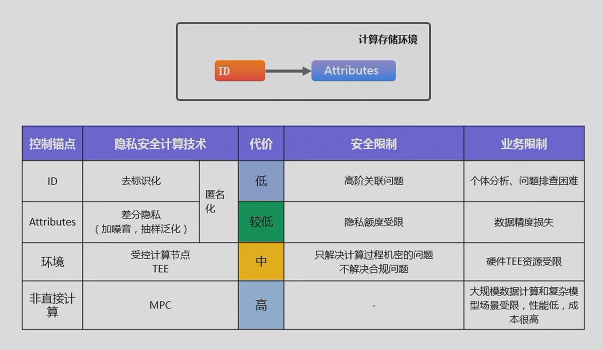
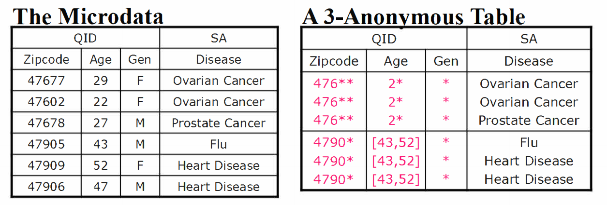
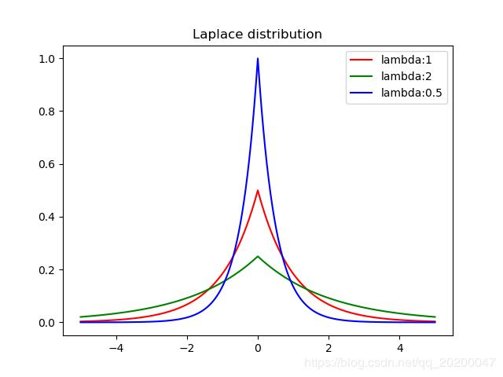
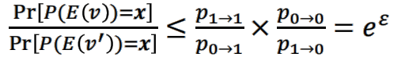
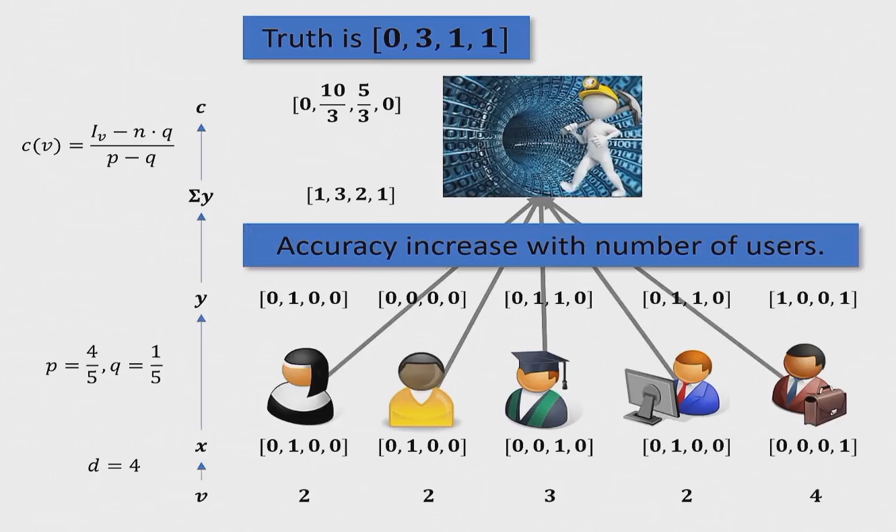
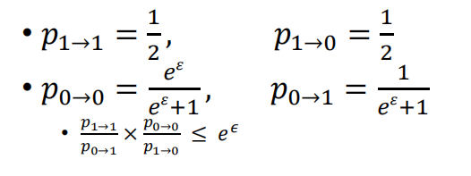
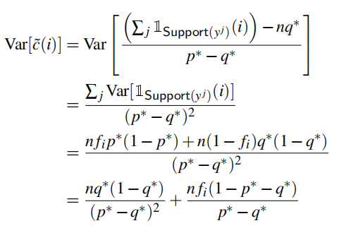

差分隐私
- 匿名化
- k-Anonymity
- I-Diversity
- t-Closeness
- 多方安全计算
- 混淆电路
- 密钥分享
- 不经意传输
- 同态加密
- 可信执行环境
- TEE(SGX)
- 差分隐私
- ramdom response

匿名化
在很多场景下我们需要share data，比如为了进行研究、法律要求等等。但是公布数据可能会泄漏个人的隐私。
k-Anonymity

我们把数据分成几类，有的是Quasi-identifiers(QIDs)，意思是可以从这些属性中推断出人的身份；有的是 Sensitive Attributes (SAs)，意思是敏感数据。
比如对于上面的QID，我们通过generalization把数据变成一样的3个一组，这样攻击者就distinguish了。
但是这样也有问题，比如上面的SA第四个如果是Heart Disease，那么我们分不清三个哪一个是目标我们也知道目标得了Heart Disease，这是由于数据lack diversity。或者如果攻击者有别的背景知识判断。
l-Diversity
针对上面提到的Lack diversity，有改进的l-Diversity方案。
- Distinct l-diversity： 就是要求每一组至少有L种SAs。
- Entropy l-diversity： 要求Entropy(qeui-class)>= log2(l)。那么这个Entropy是个什么呢？是信息熵，。pi代表每个取值出现的概率，log一般以2为底。
但是这对单值属性并不友好，比如只有是/否的属性。
t-Closeness
安全多方计算
不经意传输
不经意传输。他是一个协议，可以实现以下目标
Sender has n messages, and the receiver has an index i. Receiver wishes to receive the i-th among the sender's messages, without the sender learning i. Sender wants to ensure that the receiver receive only one of the n messages.
以1-n 不经意传输，表明如何实现上面的目标
- Sender 拥有n个
(public key, private key)，他拥有的message记做M1~Mn。 - Receiver 产生一个随机数
R，用public key i加密这个随机数R，然后将加密的结果R'发送给Sender。 - Sender 用
private key解密R'，得到n个数字K1~Kn。由于他不知道i，所以他会得到一个有意义的结果和n-1个无意义的结果，当然对Sender来说他们都是随机数。Sender依次用M xor K，得到E，将E发送给Receiver。 - Receiver用
Ei xor R就可以知道获得真正的信息Mi了。如果他用R异或别的E，得到的将是没有意义的内容。
至此，我们实现了上述的目标。
同态加密
差分隐私
提出者： Cynthia Dwork
CDP
差分隐私顾名思义就是用来防范差分攻击的。举个简单的例子，假设现在有一个婚恋数据库，2个单身8个已婚，只能查有多少人单身。刚开始的时候查询发现，2个人单身；现在张三跑去登记了自己婚姻状况，再一查，发现3个人单身。所以张三单身。而差分隐私需要做到的就是使得攻击者的知识不会因为这些新样本的出现而发生变化，或者说不让一个样本的加入与否对我们的输出结果产生重大差异。那怎么做到呢？加入随机噪声。
我们引入随机函数A对数据集进行噪声引入，对于两个相邻（只相差一条记录）的数据集D和D‘。如果
$Pr[A(D)=t] \le e^\epsilon Pr[A(D')=t]$ 对任何A可能产生的t都成立
那么我们说A满足$\epsilon-Differential$。
一般来说$\epsilon<1$我们认为是比较好的噪声。
Trust modle: 有一个可信的第三方(server)，由中心加噪声。
Laplace noise
拉普拉斯分布：$p(x)=\frac{1}{2\lambda}e^{-\frac{|x-\mu|}{\lambda}}$。一般取μ=0，函数形式如：$p(x)=\frac{1}{2\lambda}e^{-\frac{|x|}{\lambda}}$。
标准Laplace分布的均值为0，方差为$2\lambda^2$，几种$\lambda$下其概率分布图如下：

我们常用的噪声就是拉普拉斯。怎么加噪声呢？
先定义局部敏感性
对于一个查询函数 f，它的形式为 f:D->R ，其中 D 为一数据集， R 是查询函数的返回结果。在一给定的数据集 D 和与它相邻的任意数据集 D' 上，它的局部敏感性定义为： $ S(f)=max_{D'}|f(D)-f(D')|$ 。
比如，如果count函数$f(D)=|D|$，那么$S(f) = 1$。
比如，如果sum函数$f(D) = \Sigma d_i,d_i\in[0,A]$，那么$S(f) = A$。
然后加入噪声！$M(X) = f(X) + (Lap(S(f)/\epsilon))^d$
Gauss noise
正态分布：$\mu$是期望，$\sigma$是标准差。
标准正态分布：
分布图：

LDP
LDP用于收集数据，CDP用于发布数据。
类似的，一个随机化算法A满足$\epsilon-Local\ Differential$的意思是，如果对于任何两个输入x和x'，任何的输出y都满足$Pr[A(x)=y] \le e^\epsilon Pr[A(x')=y]$ 。
为什么我们有了CDP还需要LDP呢？因为LDP不需要一个可信的第三方，在本地做完噪声加入之后把数据发送给不可信的第三方。
三个步骤：
- Encoding : 本地如何给数据编码
- Perturbation : 本地如何给编码加噪声
- Aggregation : 中心如何利用加了噪声的数据得到有效的统计值
Random response
假设一个二值问题，你需要回答0/1。问一个问题，有p的概率用户回答真实答案，1-p的概率用户回答虚假答案。p应该在0到1之间。我发现这个和老师PPT上给的不一样。老师给的是有p的概率用户回答真实答案，1-p的概率用户回答随机答案。不过这问题都不大，只是表述上有差异。
那么，用户回答答案是1的概率（$P_1$表示真的是1）应该是$P = p*P_1+(1-p)(1-P_1)$。移项得到$P_1 = \frac{P+p-1}{2p-1}$。
在Warner的设计中，受访者无论抽到任何一个选项，都需要回答感敏问题；为更有效减低受访者的焦虑，Greenberg在1969年提出了一种现在更常用的随机化回答方法2。在这种方法下，访问员向受访者提供两条问题，一条是敏感问题，另一条是非敏感问题；受访者在访问员不知情下通过抽签方法以决定需要回答哪一条问题，由此保障隐私。
现在我们来评价Random response。
Bloom filter
Bloom filter是一个数据结构，它可以用来判断某个元素是否在集合内，具有运行快速，内存占用小的特点。而高效插入和查询的代价就是，Bloom Filter 是一个基于概率的数据结构：它只能告诉我们一个元素绝对不在集合内或可能在集合内。
只需要简单的对输入进行多次哈希操作，并把对应于其结果的比特置为1，就可以向 Bloom filter 添加一个元素。上面这个链接给的例子很直观。
Unary encoding (Basic rappor)
$p=\frac {e^{\epsilon/2}} {e^{\epsilon/2}+1}$ ,是每个Bit不翻转的概率；q = $\frac {1}{e^{\epsilon/2}+1}$，是每个Bit翻转的概率。
证明也很简单，。
对用户的数据先进行编码，再加入噪声。假设数据的范围是[1..d]编码方式如下：

评价需要利用方差来知道我们估y计的有效性。$Var(c_v) = Var(\frac {I_v-nq} {p-q}) = \frac {Var(I_v)} {(p-q)^2} = \frac {npq} {(p-q)^2} = \frac {ne^{\epsilon/2}}{e^{\epsilon}-2e^{\epsilon/2}+1}$.
Optimized Unary Encoding
UE的一个问题是，当d很大的时候，就会有很多很多的0和一个1。然后很多的0翻转成1会带来大噪声。（可能需要计算方差）
Perturb 0 and 1 differently and should reduce 𝑝 0→1 as much as possible

现在我们来看Optimized UE好在哪里。还是通过计算方差来评价，下面这个图是从论文里截过来的，符号和上面对照一下，$nf_i$就是$n_v$，那个$(\Sigma ...(i))$就是$I_v$。这里的$p=1/2,q = 1/(e^\epsilon+1)$. 论文说一般我们把后面的fi舍掉如果fi不大的话，然后就可以和上面的做比较了，算出来这个Optimized UE的方差是小于UE的方差的（把p,q用$\epsilon$换掉，因为比的应该是相同$\epsilon$下的数据有效性）。

Generalized Random response
Random response只适用
- User：
- Encode $x=v$ {suppose v from $D=[1,2,...,d]$}
- Toss a coin with bias $p$
- If it is head (with probability p), report the true value $y=x$
- Otherwise, report any other value with probability $q=\frac {1-p} {d-1}$ (uniformly at random)
- 然后根据让$p=\frac {e^\epsilon} {e^\epsilon+d-1},q = \frac {1} {e^\epsilon+d-1}$，然后我们不难推导出这样的p和q满足$\epsilon$-dp。
- Aggregator
- Suppose $n_v$ users possess value $v$, $I_v$ is the number of reports on $v$.
- 那么我们对$I_v$的期望 $E[I_v] = n_v p+(n-n_v) q$
- 根据上面的期望，我们估计真正有值$v$的人应该有$c(v) = \frac {I_v-nq}{p-q}$. 这是无偏估计。
Privacy-preserving Data Analysis
- Privacy preservation：什么是隐私，怎么保护隐私
- Computational correctness：
- Computational efficiency：不能用过多的算力
Heavy Hitter Estimation
例子：通过隐私保护的方式，来找到被设置为主页最多的20个网站。
挑战：其实网站的数量是不计其数的，不过常用的没有那么多。
Item sampling 希望利用抽样方式，从原数据集中抽取适量的样本，以便将样本直接放入内存中，接着再对样本进行频繁项集挖掘，以此减少挖掘时间。
item packing
bit sampling
2 phase framework：
- 找出可能的heavy hitter: bitwise randomization
- bitwise randomization+item sampling
社交网络
neighbor lists: 一个用户follow了哪些别的用户，可能很多但是相对于总数还是少的。
可信执行环境
SGX
Homomorphic Encryption
同态加密。